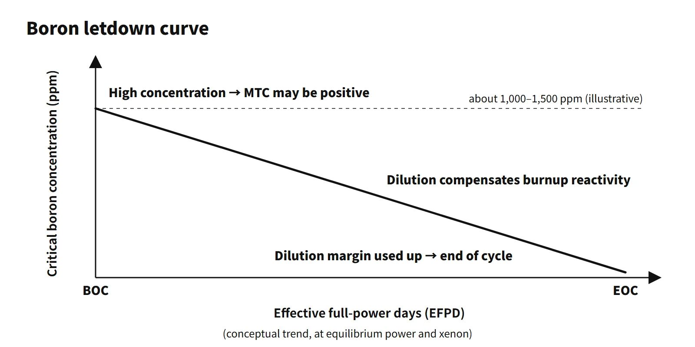

Reactor Physics & Kinetics · C-RX-002
Chemical Shim (Soluble Boron) — How Boric Acid Dissolved in the Coolant Offsets Long-Term Reactivity
Boric acid dissolved in PWR coolant absorbs neutrons through B-10, offsetting burnup and xenon slowly but uniformly as the second reactivity control system.
Chemical shim is a reactivity control method in which boric acid (H₃BO₃) is dissolved in the reactor coolant of a pressurized water reactor, so that thermal-neutron absorption by B-10 offsets slow reactivity changes such as burnup and xenon and secures the shutdown margin. It is also called soluble poison control.
A first line for an exam answer can be as short as: "the second reactivity control system of a PWR, which compensates long-term excess reactivity by B-10 absorption in boric acid dissolved in the coolant."
Principle and mechanism
Nuclear properties of B-10
Natural boron is about 19.8 at% B-10 and about 80.2 at% B-11. B-10 does the absorbing.
- Thermal-neutron (0.0253 eV) absorption cross section about 3,840 b; about 759 b for natural boron
- Reaction: ¹⁰B + n → ⁷Li + α (Q = 2.79 MeV; about 94 % passes through an excited state of ⁷Li and emits a 0.48 MeV gamma)
- A 1/v absorber with no resonances: absorption is large in the thermal range and decreases when the moderator temperature rises.
- By-products: Li-7 affects coolant pH, and the fast-neutron (n,2α) reaction produces tritium.
Boron worth: a one-group estimate
If boron is assumed to be mixed into the same region as the moderator (water) and to lower only the thermal utilization f, the size of the negative reactivity it introduces is (k₀ ≈ 1):
|ΔρB| ≈ Σ̄aB / (Σ̄aF + Σ̄aM) = (Σ̄aB / Σ̄aM)·(1 − f₀)
Here f₀ is the thermal utilization without boron. With the boron mass concentration C (ppm), Σ̄aB/Σ̄aM = C×10⁻⁶ × (18/10.8) × (759/0.664) = 1.905×10⁻³·C, so |ΔρB| ≈ 1.905×10⁻³·C·(1 − f₀). The 73rd exam (2004), session 3, Q1 gave this ratio as 2.0C×10⁻³. With f = 0.930, 22 % excess reactivity and 8 % control rod worth, the boron share of 14 % divided by 1.4×10⁻⁴/ppm gives 1,000 ppm.
The 2009 exam, session 4, Q2 (f₀ = 0.93, cold clean excess reactivity 20.3 %Δk/k, control rods 8.3 %) has the same structure. Boron must hold 12.0 %, and at −13.3 pcm per ppm the boron needed to stay critical is about 900 ppm, or about 5.15 g/L as boric acid. These are values for the exam conditions, which treat a large reactivity with a linear approximation; real core values come from core design calculations.
![Waterfall bar chart of the reactivity budget for the 2009 exam conditions: excess reactivity +20.3 percent, control rod worth -8.3 percent, leaving a boron share of -12.0 percent down to criticality; a calculation chain converts 12,000 pcm divided by 13.3 pcm per ppm into about 900 ppm of boron and about 5.15 g/L of boric acid; a card gives the one-group worth equation with sigma ratio 1.905e-3 times C, and a photo of a heat-traced boric acid tank with the conversion 21,000 ppm B = 2.1 w/o B = 12.0 w/o H3BO3, saturating at about 57 degrees C](../../assets/images/concepts/c-rx-002-chemical-shim/fig1-boron-reactivity-budget.webp)
Converting boric acid concentrations
Plant ppm values are on the basis of boron (B) mass per solution mass. With H₃BO₃ at 61.83 g/mol and B at 10.81 g/mol, the conversion factor is 61.83/10.81 = 5.72.
- 1 ppm B = 5.72 mg H₃BO₃/kg solution; 1 w/o H₃BO₃ = 1,748 ppm B
- 2011 exam, session 4, Q2: 21,000 ppm B = 2.1 w/o B = 2.1 × 5.72 ≈ 12.0 w/o H₃BO₃
- A 12 w/o solution saturates at about 57 °C, which is why high-concentration boric acid tanks and piping are insulated and heat-traced to prevent precipitation.
In an answer, first state whether the ppm is on a boron basis.
What it means in a plant
Sharing reactivity control by time scale
Control rods handle fast power adjustment and shutdown; boron handles slow changes such as burnup, xenon and samarium equilibrium, and cooldown and heatup; burnable absorbers take part of the beginning-of-cycle excess reactivity. As burnup proceeds, the critical boron concentration falls almost linearly from about 1,000–1,500 ppm at beginning-of-cycle hot full power to a few tens of ppm or less at end of cycle (illustrative range). This curve is called the boron letdown curve, and operators compensate burnup by diluting through the CVCS. The point at which dilution capability runs out is effectively the end of cycle.
Why dissolve it in the coolant
- Uniform distribution: it spreads evenly through the whole core, so there is no flux distortion or local power peaking.
- Rods-out operation: the reactor runs with the control rods almost fully withdrawn, which gives a good axial power distribution and limits the reactivity added in a rod ejection accident.
- Continuous, fine adjustment: the concentration is adjusted with charging and letdown flows, without mechanical devices.
- Large shutdown margin: high concentrations keep the core subcritical during cold shutdown and refuelling.
- Chemical stability: it dissolves well in water and, as a weak acid, its pH can be adjusted with LiOH.
Limitations and side effects
- Slow: it acts over tens of minutes to hours, so it cannot serve as a shutdown means.
- Positive MTC: at the high concentrations of beginning of cycle, a rise in moderator temperature pushes boron out along with the water, and the moderator temperature coefficient can become positive. That is why the maximum boron concentration is limited and burnable absorbers are used alongside. The 2019 exam, session 3, Q2 asked exactly this.
- Boron dilution accident: inadvertent injection of unborated makeup water adds reactivity.
- B-10 depletion: B-10 is consumed during operation, so the same ppm gives less worth. OPR1000 operating experience showed a fall from 19.8 to 19.6 a/o over 15 years. The B-10 atom ratio is therefore measured and corrected for, and some designs (such as the EPR) use B-10-enriched boric acid.
- Corrosion, precipitation and by-products: boric acid leakage corrosion (the 2002 Davis-Besse upper head), boron precipitation in the core during long-term LOCA cooling, boron deposition in CRUD, and tritium production.
Reactivity balance calculation (2021 exam, session 4, Q3 type)
With a fuel temperature coefficient of −2 pcm/°C, a moderator temperature coefficient of −5 pcm/°C and boron at −10 pcm/ppm, going from 0 to 100 % power (fuel 300 → 800 °C, moderator 300 → 320 °C) gives a temperature reactivity of −1,000 − 100 = −1,100 pcm. With the control rods fixed, boron must be diluted by 1,100/10 = 110 ppm.
Differences by reactor type
- APR1400 (example): IRWST minimum boron concentration 4,000 ppm (the concentration needed to stay subcritical after a LOCA was assessed at below 3,000 ppm); hot-full-power boron worth about −7 to −11 pcm/ppm (values from core calculation papers).
- Heavy-water reactors (CANDU): long-term reactivity is handled by on-line refuelling. Moderator boron is used for fresh-fuel cores or long shutdowns, and the "Reactivity Shim Operation" in the 2009 question refers to riding through xenon transients and similar by withdrawing adjuster rods.
Regulatory basis
- 10 CFR 50 Appendix A, GDC 26: requires two independent reactivity control systems of different design principles. One uses control rods; the other must control planned power changes, including xenon burnout, within fuel design limits. One of the two must be able to hold the core subcritical when cold. In a PWR the second system is boron (CVCS).
- GDC 27 and 28: combined reactivity control capability with ECCS boric acid injection, and maintenance of the pressure boundary and core cooling capability in reactivity accidents, including dilution.
- NUREG-0800 SRP 15.4.6 (inadvertent decrease in boron concentration in the RCS, PWR): the time available for operator action from the alarm to loss of shutdown margin must be at least 30 minutes in refuelling mode and 15 minutes in other modes.
- Technical specifications: monitoring of shutdown margin, refuelling boron concentration, MTC limits, and SIT and IRWST boron concentrations. Unit-specific values follow the Core Operating Limits Report (COLR).
- IAEA: SSR-2/1 (Rev. 1, 2016) requirements for diverse shutdown and reactivity control means; SSG-52 (2019) on MTC and dilution considerations when soluble poison is used.
- South Korea: Article 28 (reactivity control systems) of the Korean technical standard rule (Rules on Technical Standards for Nuclear Reactor Facilities, etc., an NSSC rule) sets redundancy and diversity requirements in the same structure as GDC 26.
- Then versus now: the principle of chemical shim and the GDC have not changed. Reactivity-accident criteria changed from RG 1.77 to RG 1.236 (2020).
Easily confused pairs
| Chemical shim | Control rods | Burnable absorbers | |
|---|---|---|---|
| Form | Boric acid dissolved in the coolant | Absorber rods inserted into the core | Mixed into fuel or as separate rods (Gd₂O₃, B₄C, etc.) |
| Speed | Slow (minutes to hours) | Fast (seconds) | Depleted automatically with burnup |
| Distribution | Uniform over the whole core | Local; distorts power distribution | Fixed positions |
| Main role | Burnup and xenon compensation, shutdown margin | Power adjustment, reactor shutdown | Beginning-of-cycle excess reactivity, MTC mitigation |
| Side effects | Positive MTC, dilution accidents, corrosion | Power distortion, ejection accidents | Residual poison |
Key points at a glance
Model 10-point answer: why PWRs use boric acid for reactivity control
- Definition: soluble poison control in which boric acid (H₃BO₃) dissolved in the coolant adjusts reactivity through B-10 (n,α) absorption.
- B-10 properties: 19.8 at% in natural boron, σa about 3,840 b, 1/v absorber, products Li-7 and α.
- Uniform distribution: even across the core → no power peaking or flux distortion.
- Long-term compensation: burnup, xenon and samarium reactivity compensated by dilution (boron letdown curve).
- Rods-out operation: better axial power distribution, smaller reactivity insertion on rod ejection.
- Shutdown margin: high concentration keeps the core subcritical in cold shutdown and refuelling.
- Worth: |Δρ| ≈ (Σ̄aB/Σ̄aM)(1−f₀); commercial PWRs about −5 to −15 pcm/ppm.
- Limitations: slow (not a shutdown means); at high concentration the MTC can be positive → maximum concentration limit and burnable absorbers.
- Management: preventing boron dilution accidents (alarm, 15/30 minutes for operator action), B-10 depletion correction, control of boric acid corrosion and precipitation.
- Regulation: the second of the two independent reactivity control systems of GDC 26.

This is a model answer, not an official solution. It reflects the criteria current as of 2026.
Exam relevance
Chemical shim has appeared eleven times in the Korean Professional Engineer (Nuclear Power) exam: 63rd exam (2001), session 3, Q6 (why boric acid is used for reactor control and its effects); 68th exam (2002), session 4, Q1 (PWR reactivity control means and materials); 73rd exam (2004), session 3, Q1 (one-group boric acid worth and minimum boron concentration); 2009 exam, session 4, Q2 (role of the chemical shim, boron worth and H₃BO₃ concentration); 2010 exam, session 1, Q11 (B-10 depletion); 2011 exam, session 4, Q2 (the CVCS boric acid concentrator and converting 21,000 ppm to w/o); 2014 exam, session 4, Q5 (functions of boric acid and control rods, insertion and withdrawal limits); 2019 exam, session 3, Q2 (why the beginning-of-cycle MTC can be positive); 2021 exam, session 4, Q3 (reactivity coefficients, power coefficient, control rod and boron calculations); 2025 exam, session 1, Q9 (why boric acid is used for reactivity adjustment); and 2026 exam, session 2, Q1 (properties of boric acid as a soluble poison and reactivity control). Expect descriptive "why boron" questions together with one-group worth and minimum-concentration calculations, ppm-to-w/o conversions and reactivity-balance arithmetic. Always state whether a ppm value is on a boron or a boric acid basis (the factor is 5.72), and remember that the one-group exam values are linear approximations.